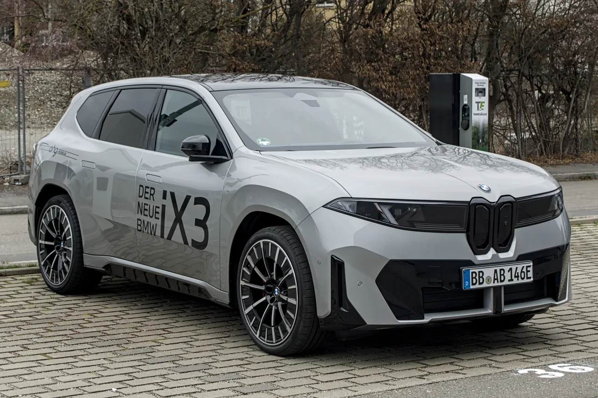
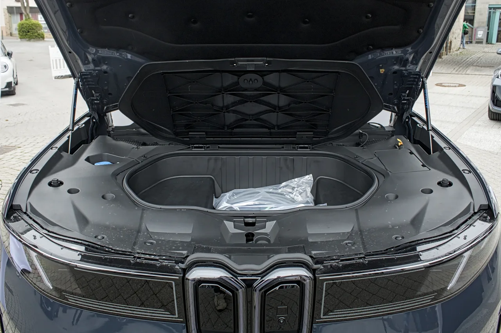

▲ BMW 신형 iX3(NA5). M 스포츠 패키지 프로 트림 사양이다 ⓒ M 93, Wikimedia Commons (CC BY-SA 3.0 DE)
BMW코리아는 지난 3월 19일부터 2세대 순수전기 iX3(NA5)의 사전 예약을 시작해 7월 6일부터 정식 판매에 들어갔다. 국내 가격은 SE 트림 7,990만 원, M 스포츠 8,690만 원, M 스포츠 프로 9,190만 원부터 책정됐다. 문제는 수요다. 유럽에서만 6주 만에 3,000대 이상 계약이 몰리며 한때 기존 내연기관 X3의 계약 대수를 넘어섰고, 이 흥행이 국내 물량 배정에도 영향을 미치며 늦게 계약한 고객은 1~2년의 대기 기간을 감수해야 하는 것으로 알려졌다.
| 항목 | 내용 |
|---|---|
| 국내 판매 가격 | 7,990만~9,190만 원(SE·M스포츠·M스포츠프로) |
| 1회 충전 주행거리 | 611km(공인 기준) |
| 급속충전 | 최대 400kW |
| 유럽 누적 주문(3월 기준) | 5만 대 이상 |
| 글로벌 누적 생산(양산 9개월) | 5만 대 |
1. 9개월 만에 주문 10만 대 — 왜 이렇게 몰릴까

▲ 신형 iX3 측면. 새로운 노이어 클라쎄 플랫폼을 기반으로 개발됐다 ⓒ Alexander Migl, Wikimedia Commons (CC BY-SA 4.0)
BMW그룹에 따르면 신형 iX3는 양산 시작 9개월 만에 전 세계 누적 주문이 10만 대에 육박하고 있다. 611km에 달하는 공인 주행거리와 400kW급 초급속 충전 성능이 동급 경쟁 전기 SUV 대비 경쟁력 있는 수치로 평가받으며 수요를 끌어올렸다는 것이 업계 분석이다. BMW는 이 같은 폭발적 수요에 대응하기 위해 당초 2026년 2월로 예정했던 2교대 생산 체제를 앞당겨 도입하며 생산 능력 확충에 나섰다.
2. 노이어 클라쎄 플랫폼 — BMW 전동화 2세대의 시작
신형 iX3의 흥행에는 플랫폼 세대교체가 자리하고 있다. iX3는 BMW가 야심 차게 준비해온 차세대 전용 전기차 아키텍처 '노이어 클라쎄(Neue Klasse)'를 최초로 적용한 양산 모델이다. 기존 내연기관 겸용 플랫폼을 개조해 만들던 1세대 BMW 전기차들과 달리, 처음부터 배터리·모터 배치를 전기차 전용으로 설계해 주행거리와 실내 공간 효율을 동시에 끌어올렸다는 평가를 받는다. 노이어 클라쎄는 앞으로 BMW의 후속 전기 세단·SUV에도 순차적으로 적용될 예정이라, iX3는 사실상 BMW 전동화 2세대의 신호탄인 셈이다.
3. 국내도 예외 없다 — 대기 기간을 줄이려면

▲ 신형 iX3. 국내에서도 사전 예약이 몰리며 계약 시점에 따라 출고 대기 기간이 크게 갈리고 있다 ⓒ Alexander Migl, Wikimedia Commons (CC BY-SA 4.0)
국내 역시 상황은 비슷하다. 사전 예약 초기에 계약한 고객은 비교적 이른 출고가 가능하지만, 뒤늦게 계약을 문의하는 고객은 짧게는 수개월에서 길게는 1~2년의 대기가 기본값으로 안내되고 있는 것으로 전해진다. 전 세계적으로 수요가 물량을 초과하는 상황이라, 국내 대기 기간 단축은 BMW의 생산 확대 속도에 달려 있다는 것이 딜러 업계의 공통된 설명이다.
국내 전기 SUV 시장에서는 아이오닉5·EV6 등 국산 모델과 테슬라 모델Y가 이미 자리를 잡고 있어, iX3는 프리미엄 브랜드 전기 SUV를 원하는 수요층을 새롭게 공략하는 모양새다. 611km 주행거리는 동급 프리미엄 전기 SUV 중에서도 상위권에 속해, 장거리 주행이 잦은 구매자에게 특히 매력적인 선택지로 꼽힌다.
4. 정리 — 대기가 부담스럽다면 체크할 것
출고를 서두르는 구매자라면 재고 물량이나 취소분을 노리는 것이 대기 기간을 줄이는 현실적인 방법이다. 색상·옵션을 특정하지 않고 딜러 재고를 우선 확인하면 신규 계약보다 빠른 출고가 가능한 경우도 있다. 반대로 원하는 트림·색상을 정확히 맞추고 싶다면 장기 대기를 감수해야 한다는 것이 딜러 업계의 공통된 조언이다.